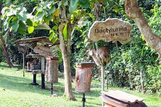

Elmina Castle was erected by the Portuguese in 1482 as Castelo de São Jorge da Mina (St. George of the Mine Castle), also known as Castelo da Mina or simply Mina (or Feitoria da Mina), in present-day Elmina, Ghana (formerly the Gold Coast). It was the first trading post built on the Gulf of Guinea, and the oldest European building in existence south of the Sahara.[1] First established as a trade settlement, the castle later became one of the most important stops on the route of the Atlantic slave trade. The Dutch seized the fort from the Portuguese in 1637, after an unsuccessful attempt in 1596, and took over all of the Portuguese Gold Coast in 1642. The slave trade continued under the Dutch until 1814. In 1872, the Dutch Gold Coast, including the fort, became a possession of the United Kingdom.[2] The Gold Coast gained its independence as Ghana in 1957 from United Kingdom and now controls the castle.[3] Elmina Castle is a historical site, and was a major filming location for Werner Herzog's 1987 drama film Cobra Verde. The castle is recognized by UNESCO as a World Heritage Site, along with other castles and forts in Ghana, because of its testimony to the Atlantic slave trade.[4][2] It is also a major tourist attraction in the Central Region of Ghana.Elmina offers some of the most beautiful beaches in Ghana. While not as secluded as beaches further to the west, there are clean palm-lined beach here for you to relax and enjoy. There are beach resorts of varying class along this stretch of coast and we are certain you would enjoy a night or two with the sea breeze and star-filled nights.
Time of Visit
Generally the theater is opened to the public from 9:00 am to 5:00pm on weekdays and from 10:00am to 4:00pm on Saturdays. However these hours may be changed depending on the scheducle of events.
Dos and Don't
If you don't like dressing up, at least wear something respectful . You don´t need to wear an evening dress, but baggy jeans ,T- shirt and sneakers are not good, believe me. Maybe that in different countries it might be perfectly OK - it is not here.
Kakum National Park
This forested parkland makes for a great day hike with fantastic views, especially from the wooden suspension bridges that soar a hundred feet overhead.Located just 30km north of Cape Coast, Kakum National Park is one of Ghana's most famous parks. This 357km² national park consists of undisturbed coastal forest and is home to Africa's only rainforest canopy walkway. This canopy walkway is one of only a dozen or so such walkways in the world.
Walking tours through the park offer the opportunity to spot much of Ghana's indigenous plant life, as well as many types of birds and butterflies. However, due to the number of visitors at the main entrance and the canopy walkway, game sightings are rare and can only occur when well into the park. This is certainly possible, and the park will allow early and overnight guests for such visits, but realize that a casual visit to Kakum National Park will result in a wildlife experience consisting only of birds, butterflies, insects and lizards,he rain forest canopy walkway connects 6 enormous trees and is in seven sections which total to a length of 330 m (1,080 ft). It reaches the height of 40 meters (130 ft) above the forest floor and is secured by a series of nets and wires for safety purposes.
This is definitely an exciting experience. From the treetops, you have a unique and spectacular view of the rainforest fauna which cannot be seen from the ground.
Time of Visit
Generally the theater is opened to the public from 9:00 am to 5:00pm on weekdays and from 10:00am to 4:00pm on Saturdays. However these hours may be changed depending on the scheducle of events.
Dos and Don't
If you don't like dressing up, at least wear something respectful . You don´t need to wear an evening dress, but baggy jeans ,T- shirt and sneakers are not good, believe me. Maybe that in different countries it might be perfectly OK - it is not here.
Cape Coast Castle
This castle in Cape Coast, Ghana—once known as the Gold Coast of West Africa—was one of around 40 “slave castles” that served as prisons and embarkation points for slaves en route to the Americas (the Caribbean, South America, and the U.S.). Thousands of enslaved Africans from regions near and far, sometimes hundreds of miles away, were taken to these castles to be sold to slave ships.One of the most well known parts of Cape Coast Castle, that you can visit today, is the “Door of No Return,” which led slaves out of the castle and onto the ships setting off on the Middle Passage. Their boat journeys could last several months, and an estimated 15 percent of slaves died aboard, en route. Somewhere around 12 millions slaves were sent from Africa, millions of whom died in the process. Cape Coast Castle was a way station in history’s largest, and darkest, forced human migration.
The history of the castle, which could also be termed a fort, is predictably complicated and contentious. Possession of it was stolen back and forth as the slave trade grew bigger and more lucrative in the 1600s and 1700s. The site’s first establishment was built by the Swedish Africa Company, whose officers had established good relations with local chiefs. In 1650, Swede Hendrik Caerloff finagled the King of Fetu’s permission to build a fort, and in 1653, Carlusborg Fort was erected.When you visit Cape Coast Castle today, the main destination in the calm and breezy seaside town of Cape Coast, you can tour the entire expansive building, from the ramparts lined with cannons to the nearly lightless dungeons. These dungeons, called “slave holes” by the British, had essentially no ventilation nor windows, with 200 slaves, separated by gender, crammed in one room, and the floor covered in human waste. Diseases like malaria and yellow fever were common under such wretched conditions.
Time of Visit
Generally the theater is opened to the public from 9:00 am to 5:00pm on weekdays and from 10:00am to 4:00pm on Saturdays. However these hours may be changed depending on the scheducle of events.
Dos and Don't
If you don't like dressing up, at least wear something respectful . You don´t need to wear an evening dress, but baggy jeans ,T- shirt and sneakers are not good, believe me. Maybe that in different countries it might be perfectly OK - it is not here.
Fort William
In 1753, the British Parliament voted enormous sums for the construction of a new trading fort in Anomabu, now part of the Central Region of Ghana. Completed by 1757, it was erected on ‘an eroded shelf of hard rock close to a sandy beach indentation with a sheltered anchorage’ .
Earlier, in 1674, the English had built a small fort, named Fort Charles, after the reigning monarch King Charles II. The English demolished Fort Charles in 1731, to prevent its capture and use by another European company - notably their archrival in overseas colonisation, the French. The French, however, rebuilt a fort where Fort Charles once stood. Regretting the loss of their Anomabu fort, the English hastened to then build a new one - Fort William.
The fort was probably christened Fort William by 19th century commander Brodie Cruickshank in honour of King William IV, upon the completion of another one storey apartment.
Constructed almost entirely with local materials, Fort William is considered ‘one of the handsomest and best built of the Coast’ . However, ‘nowhere else does the original structure of a fort include a large prison specifically built to hold slaves awaiting transport overseas’ . Speaking about Anomabu slave exports, an English captain said in 1717, “[From] January 1702 to August 1708 they took to Barbados, Jamaica a total of not less than 30,141 slaves” .
Fort William had a superior stock of cannons; yet it was attacked by the French in 1794 and ‘besieged by the Asantes on 15th June, 1806 a day after which it capitulated. Fort William used to servr as a prison.
Time of Visit
Generally the theater is opened to the public from 9:00 am to 5:00pm on weekdays and from 10:00am to 4:00pm on Saturdays. However these hours may be changed depending on the scheducle of events.
Dos and Don't
If you don't like dressing up, at least wear something respectful . You don´t need to wear an evening dress, but baggy jeans ,T- shirt and sneakers are not good, believe me. Maybe that in different countries it might be perfectly OK - it is not here.
International Stingless Bee
The International Stingless Bee Centre (ISBC) is a sanctuary for stingless bees and a place of environmental education and ecotourism. Many people do not know about stingless bees, especially African species, nor have many sampled their honey, pollen and propolis, delectable activities offered at the ISBC. In addition to beekeeping, the ISBC also serves as a station for international research.The International Stingless Bee Centre (ISBC) is a sanctuary for stingless bees and a place of environmental education and ecotourism. Many people do not know about stingless bees, especially African species, nor have many sampled their honey, pollen and propolis, delectable activities offered at the ISBC.
In addition to beekeeping, the ISBC also serves as a station for international research.

Time of Visit
Generally the theater is opened to the public from 9:00 am to 5:00pm on weekdays and from 10:00am to 4:00pm on Saturdays. However these hours may be changed depending on the scheducle of events.
Dos and Don't
If you don't like dressing up, at least wear something respectful . You don´t need to wear an evening dress, but baggy jeans ,T- shirt and sneakers are not good, believe me. Maybe that in different countries it might be perfectly OK - it is not here.